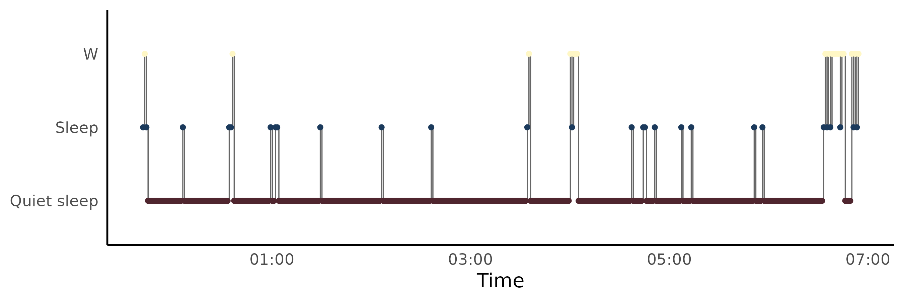
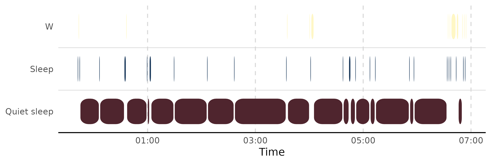
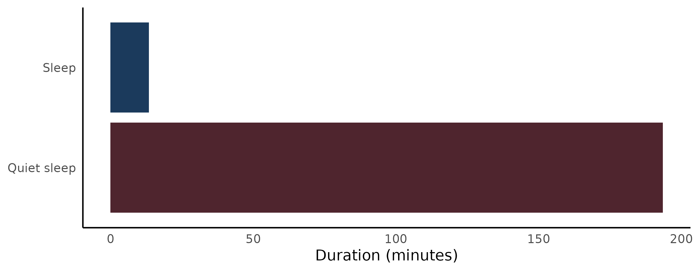

Coarse hypnograms from actigraphy: a worked example with zeitR
Source:vignettes/articles/zeitR-integration.Rmd
zeitR-integration.RmdThe mrpheus-integration
article walks through hypnoR’s AASM path end-to-end using mrpheus’s raw
automatic PSG staging. Actigraphy-derived staging comes with a different
set of things worth checking before you trust the metrics – this picks
up that same “check before you interpret” habit, using zeitR’s bundled
ActTrust recording instead.
Getting the data in
zeitR ships a real validation recording, input1.txt,
used in its own pipeline-parity tests against a Python reference
implementation:
result <- zeitR::run_pipeline(
system.file("extdata", "input1.txt", package = "zeitR"),
tz = "UTC",
quiet = TRUE
)
resultThe quiet = TRUE above is deliberate, not just
noise-suppression – worth checking what it’s actually quieting rather
than reflexively silencing it:
result$issues
#> # A tibble: 5 × 4
#> row datetime issue detail
#> <int> <dttm> <chr> <chr>
#> 1 10146 2021-06-03 12:50:54 gap 2199 s gap before this epoch
#> 2 20141 2021-06-10 11:43:44 gap 1130 s gap before this epoch
#> 3 30237 2021-06-17 12:01:57 gap 193 s gap before this epoch
#> 4 49255 2021-06-30 17:19:12 gap 1215 s gap before this epoch
#> 5 60894 2021-07-08 19:54:25 gap 2233 s gap before this epochA handful of minor timestamp gaps, no backward jumps, no year
artefacts. Small gaps like this are common in real wearable recordings
(a missed transmission, a brief disconnect) and don’t necessarily
invalidate the recording – but it’s worth actually looking at
$issues rather than assuming quiet = TRUE
means “nothing to see here.”
Into hypnoR
zeitr_hyp <- zeitR::export_hypnogram(result)
hyp <- new_hypnogram(zeitr_hyp)
attr(hyp, "resolution")
#> [1] "coarse"
nrow(hyp)
#> [1] 76196Coarse resolution, auto-detected correctly (no
N1/N2/N3/REM labels
in the data). nrow(hyp) is likely well beyond one night’s
worth of epochs – input1.txt is a multi-day recording,
which matters for everything that follows.
A caveat: off-wrist time is folded into “Wake”
zeitR::export_hypnogram()’s stage mapping sends
state == 4 (off-wrist) to "W", the same label
as genuine wakefulness – there’s no fourth “unknown/off-wrist” category
in hypnoR’s 3-state coarse model. That’s a reasonable simplification,
not a bug, but it means a recording with substantial off-wrist time will
show inflated Wake duration that isn’t really about sleep/wake behaviour
at all. Worth checking how much of this recording that actually is:
offwrist_epochs <- sum(result$data$state == 4L)
offwrist_epochs
#> [1] 5542
offwrist_epochs / nrow(result$data) # proportion of the whole recording
#> [1] 0.07273348If that proportion is small, it’s a non-issue here. If a given analysis turned up unexpectedly long Wake/WASO on a specific night, this is the first place to check before concluding anything about sleep quality – the device could simply have been off the wrist.
Picking the right night
input1.txt spans several nights
(result$nights), so running metrics over the
entire multi-day recording would be exactly the kind of mistake
covered in the mrpheus article: TST would represent
multiple nights’ sleep combined, and SOL would be measured
from the very start of the whole file rather than from any single
night’s actual bedtime.
result$nights
#> # A tibble: 55 × 11
#> night is_nap bed_time get_up_time tbt tst waso sol
#> <int> <lgl> <dttm> <dttm> <int> <dbl> <dbl> <int>
#> 1 1 FALSE 2021-05-27 23:42:15 2021-05-28 06:54:15 432 414 18 0
#> 2 2 FALSE 2021-05-28 23:30:15 2021-05-29 07:16:15 466 440 25 0
#> 3 3 FALSE 2021-05-30 09:28:15 2021-05-30 12:58:15 210 197 0 8
#> 4 4 FALSE 2021-05-30 22:18:15 2021-05-31 07:58:15 580 553 27 0
#> 5 5 FALSE 2021-05-31 23:24:15 2021-06-01 07:14:15 470 456 12 0
#> 6 6 FALSE 2021-06-02 00:10:15 2021-06-02 07:19:15 429 406 23 0
#> 7 7 FALSE 2021-06-02 23:05:15 2021-06-03 07:47:15 522 492 30 0
#> 8 8 FALSE 2021-06-04 00:01:54 2021-06-04 08:29:54 508 469 39 0
#> 9 9 FALSE 2021-06-04 23:36:54 2021-06-05 05:20:54 344 321 4 9
#> 10 10 FALSE 2021-06-06 00:34:54 2021-06-06 07:30:54 416 401 15 0
#> # ℹ 45 more rows
#> # ℹ 3 more variables: soi <int>, nw <int>, eff <dbl>Restrict to one real night using its own
bed_time/get_up_time – exactly the
lights_off/lights_on window
compute_sleep_architecture() and
window_hypnogram() expect:
night1 <- result$nights[!result$nights$is_nap, ][1L, ]
night1
#> # A tibble: 1 × 11
#> night is_nap bed_time get_up_time tbt tst waso sol
#> <int> <lgl> <dttm> <dttm> <int> <dbl> <dbl> <int>
#> 1 1 FALSE 2021-05-27 23:42:15 2021-05-28 06:54:15 432 414 18 0
#> # ℹ 3 more variables: soi <int>, nw <int>, eff <dbl>
hyp_night1 <- window_hypnogram(hyp, lights_off = night1$bed_time, lights_on = night1$get_up_time)
nrow(hyp_night1)
#> [1] 433Does smoothing matter here the way it did for mrpheus?
The mrpheus article found smoothing genuinely necessary, because
mrpheus::stage_epochs() is a raw per-epoch argmax
classifier with no continuity constraint. zeitR’s pipeline is different:
Crespo (2012)’s sleep-period detection and Cole-Kripke (1992)’s epoch
scoring both impose their own temporal structure on the output, rather
than staging each epoch independently. Worth checking whether
smooth_hypnogram() actually finds anything to do here,
rather than assuming the same lesson transfers automatically:
hyp_smooth <- smooth_hypnogram(hyp_night1, method = c("aasm_isolated", "min_run"), min_run_epochs = 4)
mean(hyp_smooth$stage != hyp_smooth$stage_raw)
#> [1] 0.07159353Whatever that number comes out to, compare it against the mrpheus article’s equivalent check – if it’s much lower here, that’s evidence the two staging sources genuinely differ in how much raw epoch-level noise they produce, not just a coincidence of this particular recording.
Metrics on the properly-windowed night
arch_night1 <- compute_sleep_architecture(hyp_night1)
arch_night1
#> # A tibble: 1 × 14
#> tst_min tib_min se_pct sol_min waso_min rem_lat_min sws_lat_min pct_n1 pct_n2
#> <dbl> <dbl> <dbl> <dbl> <dbl> <dbl> <dbl> <dbl> <dbl>
#> 1 207 216. 95.6 0 9 NA NA NA NA
#> # ℹ 5 more variables: pct_n3 <dbl>, pct_rem <dbl>, pct_sleep <dbl>,
#> # pct_quiet_sleep <dbl>, staging_resolution <chr>
trans_night1 <- compute_transitions(hyp_night1)
trans_night1$matrix
#> # A tibble: 3 × 4
#> from `Quiet sleep` Sleep W
#> <chr> <dbl> <dbl> <dbl>
#> 1 Quiet sleep 0.953 0.0413 0.00517
#> 2 Sleep 0.519 0.111 0.370
#> 3 W 0.222 0.389 0.389
trans_night1$fragmentation
#> # A tibble: 1 × 3
#> n_transitions fragmentation_index wake_transitions
#> <int> <dbl> <int>
#> 1 53 0.123 12compute_cycles() remains AASM-only regardless of staging
source – coarse hypnograms have no REM stage to segment NREM/REM cycles
on:
compute_cycles(hyp_night1)
#> Error in `compute_cycles()`:
#> ! `compute_cycles()` requires a full AASM hypnogram.
#> ✖ `hypnogram` has "coarse" resolution (no REM stage), so NREM/REM cycles cannot
#> be detected.Both plotting styles
plot_hypnogram(hyp_night1)
plot_hypnogram(hyp_night1, style = "capsule")
plot_architecture(arch_night1)
Main sleep vs naps, if there are any
result$nights$is_nap distinguishes zeitR’s main sleep
periods from secondary (nap) periods. Worth checking whether this
recording has any naps at all before assuming a single “the sleep
period” exists per day:
table(result$nights$is_nap)
#>
#> FALSE
#> 55If there are naps present, comparing their architecture against a main night (rather than pooling them together) avoids quietly averaging two physiologically different kinds of sleep opportunity into one number.
Takeaways
- Actigraphy-derived hypnograms carry different caveats than automatic PSG staging does – off-wrist time masquerading as Wake is the zeitR-specific one to check, the way scattered low-confidence REM was the mrpheus-specific one.
-
quiet = TRUE(or any warning-suppression argument) is worth checking what it’s actually suppressing, not just trusting it silently. - Windowing to the real analysis period matters regardless of staging source – a multi-night actigraphy recording needs the same care a multi-hour ambulatory PSG recording does.
- Smoothing’s necessity is a property of the staging source, not a universal step to always apply – checking whether it changes anything is more honest than assuming a lesson from one pipeline transfers unchanged to another.
-
compute_cycles()’s AASM-only requirement is a genuine constraint of what coarse staging can support, not an arbitrary limitation – there’s no REM stage in a 3-state model to segment cycles on.